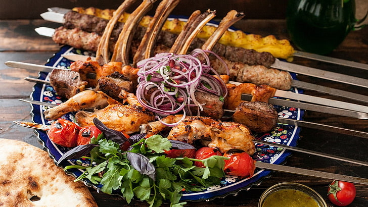
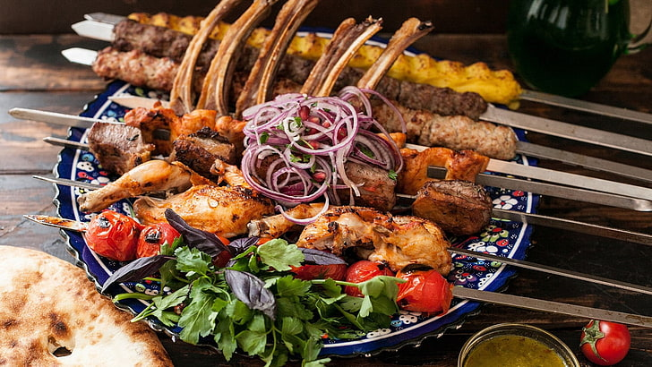
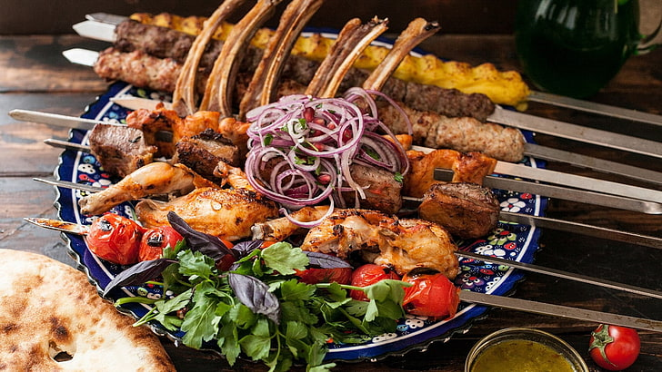
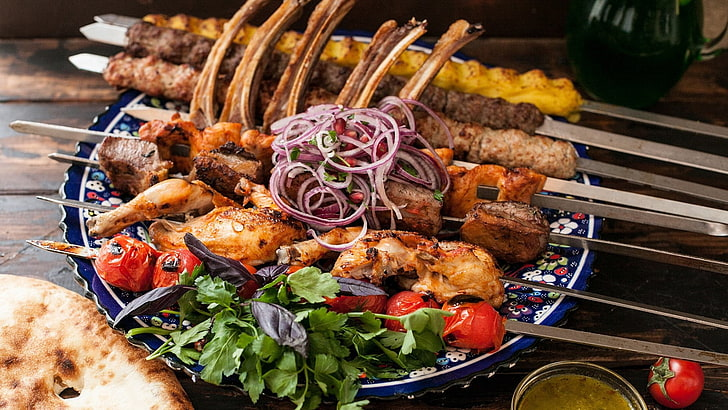
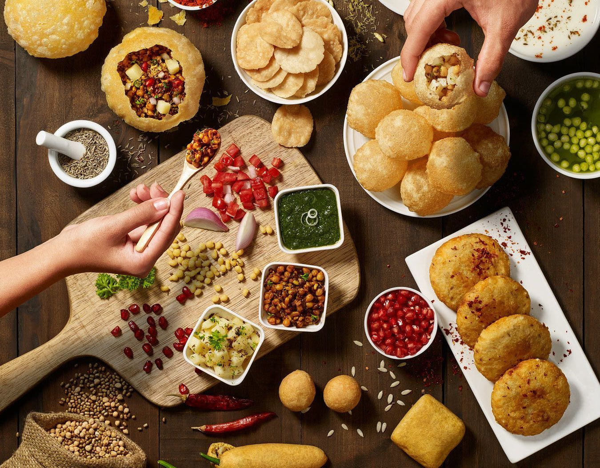
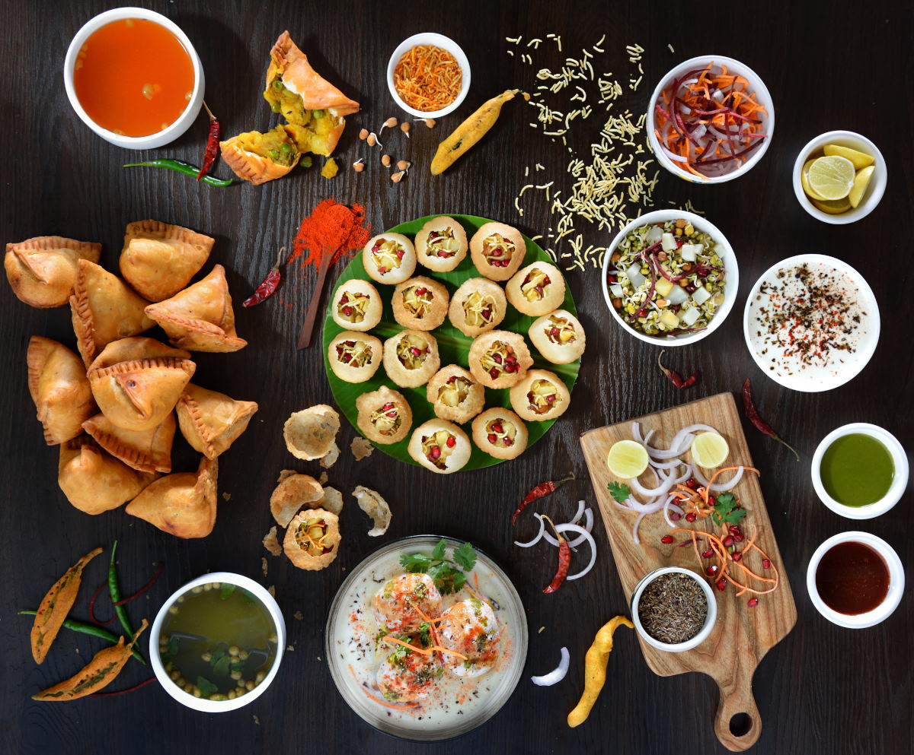

Food is the basic human need to stay alive. Moreover, it is the need of every living organism. Therefore it is important that we should not waste food. Our world consists of different types of cultures. These cultures have varieties of dishes of food in them.
Thus, all the dishes have different taste. Furthermore, our nature provides us a variety of food. From fruits to vegetables, from Dairy food to seafood everything is available.
Every culture and region has a history that shows the love of people for street food. It dates back to the ancient Greece time period. They used to serve fried fish as their most common street dish. For people of ancient Rome street food was their main source of food.
The ‘chickpea soup’ was a commonly sold item. China has a similar history.
During colonial time of America, the vendors used to sell ‘roasted oysters and corn’.


India is so packed full of incredible street food to try that it can be hard to know where to start. In this article, you'll find our practical guide to the best street food cities, top street food dishes, and some information on how to eat street food safely. Some of the top street food cities in India are Delhi, Mumbai, and Jaipur. Some of our favorite dishes are aloo tikki, pani puri, and pav bhaji etc are very famous street food in our India
As indian people are very strict and very honest to there resipes and each religion people have there own recipes and in coming pages withh will see famous Breakfast,Meals,Snacks,Sweets and every ones favourite Ice Cream.
PRESS ON INDIAN BREAK FAST UP IN THE HEADING FRAME TO SEE MORE VARIETIES